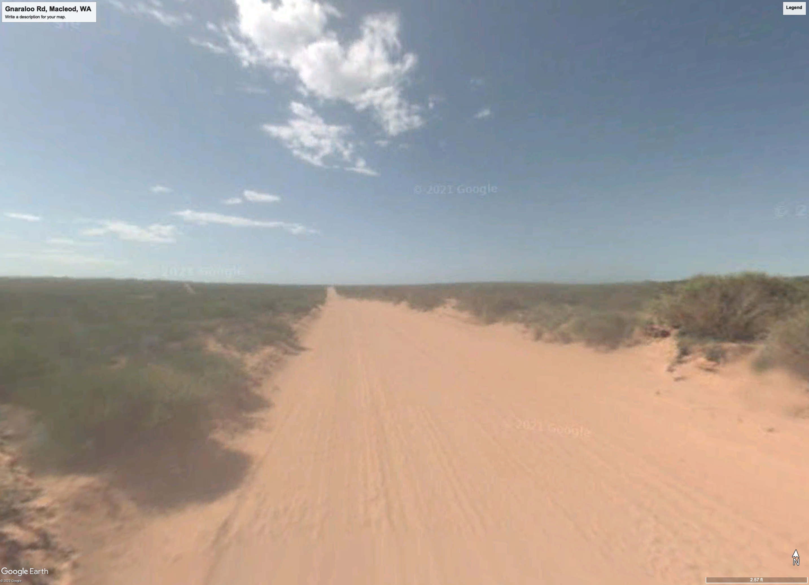
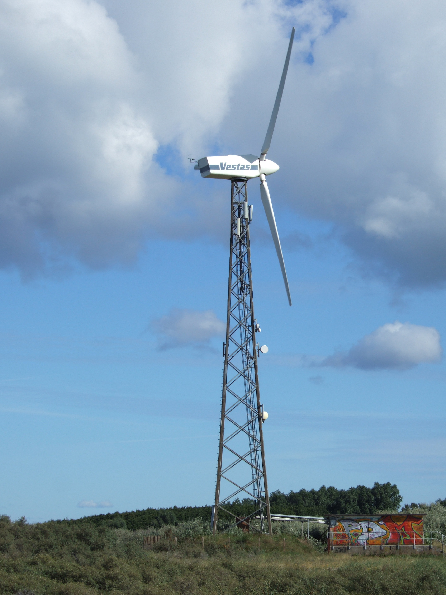

One frequent “issue” raised whenever I’ve brought up either off-shore desalination or industrial-scale cisterns to a theoretically knowledgeable audience is the cost of transporting water to the site of use. My counter-argument has been that there is arid land not far from the ocean at elevations that are not prohibitive. But that is hand-wavey and aspirational, and if distribution cannot be conducted in an environmentally sound manner, both solutions are doomed. So I figured it was time to address the issue directly with data.
Answering this question requires more engineering than I’m qualified to do, but that hasn’t stopped me yet! And I am qualified to do energy calculations, at least on the back of a virtual envelope.
Rather than do the purely academic “engineer the world” approach, let’s return to the example of water delivery to the arid, desolate coast of Western Australia to see if a delivery system might pencil out in a specific environment. Further, let’s imagine the most straightforward system based on our earlier design, which:
Supplies 400 acre-feet of irrigation water per month, produced using low-cost nuclear or (free) solar energy.
Draws from a reservoir that sits at sea level a mile off-shore near the farm
Connects to the shore using a pipeline
Uses the water to grow a sugarcane crop through drip irrigation
The baseline question is, “How much energy would be required to move the water on land?” The secondary question is, “Can this energy, like the energy used for desalination, be supplied from renewable, carbon-free sources?”
I randomly picked a location near Gnaraloo Turtle Beach near Macleod, Western Australia, and chose a pipeline route beginning a mile off-shore. This combination would provide a water supply close to Gnaraloo Road, a narrow dirt road roughly two miles from the ocean. The area is almost flat, ideal for agriculture except for the lack of water. Here’s what it looks like:


The coastal plain is about 100 feet above sea level, so we’d need to raise 4,800 acre-feet of water to 100 feet above sea level over a year. That’s an energy calculation. It will need to be pumped higher so that a drip irrigation system can be pressurized, and there will be resistance in the piping, both of which will require more energy than simply lifting the water to the point of use. But, on the plus side, the overall system is designed for intermittency (plants, in the end, do not require a constant water supply), so we can store water (cheap) rather than electrons (expensive).
First, how much further up will the water need to be raised to maintain pressure? Drip irrigation systems require about 15-25 psi1. For water towers, the pressure is related to the height, and to keep this pressure, we’d need a water tower around 50 feet high2. [For scale, a typical water tower in the Midwest is around 150 feet tall and holds about a million gallons.]
Second, calculating resistance relies on an empirical formula called the Hazen-Williams equation. This equation considers the length, flow rate, and pipe diameter for the resistance of a water pipe. The details aren’t essential (it’s easy enough to put the equation into Excel to get accurate numbers), but what’s important is that the resistance is related to the length, the flow rate squared (roughly), and inversely related to the diameter of the pipe raised to the fifth power (approximately). This means that we can punt the decision on the feed pipe diameter to later in the process since a bigger pipe can more than compensate for pressure losses due to length.
So, now we can do an energy calculation. For now, let’s ignore losses in converting energy forms—if it doesn’t make sense in an ideal system, a real system will be even more nonsensical.
An acre-foot of water weighs 2,718,000 pounds, and the energy unit for lifting a pound a foot is…a foot-pound (thank you, Imperial Britain). Foot pounds (feet pound?) can be converted into electric power requirements (kilowatt-hours or kWh) to gauge the scale so that we can calculate the minimum energy needed to run the system. Sparing you the details, it would take just under 500,000 kWh per year to pump the water. If we purchased the electricity from the grid at $0.10 per kWh, that’d add about $10-$15 per acre-foot to the cost of the water, at a minimum. That’s added expense, but it’s not prohibitive.
But as I alluded to earlier, we don’t need grid-quality power. An agricultural system is intrinsically resilient to variation. We’re better off pumping water with renewables because we can use all the energy when available instead of obeying the grid’s requirement to match variable demands with uncertain supplies in 15-minute intervals. Water, stored at a height, will be our “battery”.
To continue with this specific example, imagine pumps powered by a dedicated wind turbine. They turn on when the wind blows and off when it’s quiet. Advantageously, our thought experiment is located on the coast, where wind patterns are reliable, and wind capacity factors are 35-40%. So, running the pumping system would require a wind turbine rated at around 225 kW. That’s a Vestas V27, selling (used) for approximately $60,000 today. At that price, it would pay for itself in a year at $0.10 per kWh. And they last for decades.

Further, suppose we go old-school to use the mechanical energy of wind and power a reciprocating pump (the strategy of those classic farm windmills). In that case, we can decrease the complexity and increase the system’s efficiency, leading to higher reliability and improved performance, which will be desirable for remote installations. It will also reduce the manufacturing cost. [Using a purely mechanical system has the advantage of eliminating rare earth magnets.]
“Old school” also means that it’s proven in practice. The bottom line: Moving water uphill (even over significant elevations) isn’t ridiculous from an energy standpoint. And there’s a lot of headroom to account for less-than-efficient conversions.
We can turn the math around to estimate the elevation achievable in this system with a single modern wind turbine, trying to answer the question, “What are the practical limits, today, to irrigating with seaborne freshwater supplies?” A ‘typical’ modern wind turbine generates 2-3 megawatts or about ten times as much power as the Vestas example. This would make the practical elevation limit around 1,000 feet, which isn’t reached until about 100 miles inland in Western Australia.
The geography of Western Australia isn’t unusual. A more economically lucrative area could be to target the northern Gulf of California, a location I’ve discussed previously.3 The height of the All-American Canal (which supplies the Imperial Valley with Colorado River water) is less than 200 feet above sea level. Another area I’ve discussed is northern Egypt,4 where irrigation has been established for millennia, and again, vertical transport of 100-200 feet of water, driven by renewables, would open vast areas to agriculture.
Bottom line: Water transport, particularly if driven by renewables, is NOT a particularly onerous limitation to seaborne water delivery for irrigation. And this system (even at this small scale) would have an impact.
As I discussed in earlier installments, a field of sugarcane captures over 200 kg per hectare per day of atmospheric carbon dioxide,5 while newly irrigated land can retain about 10 tons of carbon dioxide per acre in the soil.6 The impact on the atmosphere will depend precisely on what is done with the harvested sugar and bagasse, the $85 per tonne CO2 value cited in the Inflation Reduction Act makes this an attractive business even without a productive harvest. I have looked at these numbers long enough to say that, even without a huge spreadsheet model to back it up.
Thank you for reading Healing the Earth with Technology. This post is public so feel free to share it.
See https://help.dripdepot.com/support/solutions/articles/11000044710-5-drip-irrigation-mistakes-to-avoid #5. Adequate flow is achievable at lower pressures, so this is a conservative estimate.
The exact pressure depends on temperature, but a quick conversion factor is that it takes 2.31 feet of height to generate one psi. My virtual envelope has limits, so any specific system will require more detailed engineering. Bigger pipes will hold more volume, and larger areas require higher flow rates. For calibration, taking the California Aqueduct at Tejon Pass as a prototype, the water pipes are 57 inches in diameter. The corresponding resistance at a constant flow rate of 400 acre-feet per month is about 0.06 psi. Alternatively, if we specified that our coastal system couldn’t lose more than five psi due to frictional losses in flow, a 24-inch diameter pipe would still do the trick.